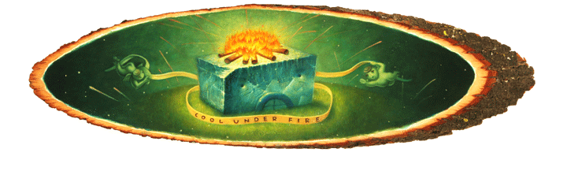

Logrhythms A new series of 15 plus pieces and part of the Bumbershoot 2005 art component.
Acrylic on bias-cut logs.
1. Logrhthyms, 7 1/2" x 24", $300
2. On A Clearcut Day You Can See Forever, 6" x 32", Sold
3. See Saw, 6" x 11 1/2", Sold
4. View 1, 6 3/4" x 9", Sold
5. View 2, 6 1/2 " x 10", $350
6. View 3, 5 3/4" x 9", $350
7. Loggerheads, 9" x 30 1/2", Sold
8. Cool Under Fire, 7 5/8" x 27 1/4", $800
9. Frosty The Shaman, 8 3/4" x 22", Sold
10. Thought For Food, 8 1/2" x 26 1/4", $800
11. Smolder, 9 3/4" x 25", $750
12. This is Not a Knot, 8" x 29", $800
13. Nothing is Sacred, 8" x 12", Sold
14. Koan, 6 1/8" x 10 1/2", $400